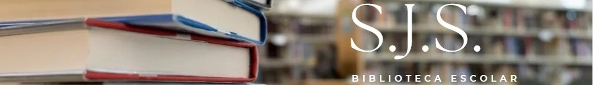

Biblioteca Selim
Seja Bem vindo a Biblioteca Selim aqui você encontrará os livros da nossa biblioteca, poderá fazer suas reservas e renovalas ou gerencias seus emprestimos e dividas.
A Biblioteca Selim é um projeto desenvolvido para a Feira Técnica da E.E. Selim José de Salles, com o objetivo de criar uma plataforma digital que facilite o acesso dos alunos aos recursos da biblioteca escolar.
Por meio do site, os usuários poderão consultar os livros disponíveis, encontrar informações sobre as obras, realizar reservas e acompanhar seus empréstimos, renovações e possíveis pendências.
Dessa forma, o projeto busca tornar o gerenciamento e a utilização da biblioteca mais simples, organizada e acessível.
O desenvolvimento da Biblioteca Selim também representa a aplicação prática dos conhecimentos adquiridos durante o curso de Desenvolvimento de Sistemas.
Através da criação do site, os alunos envolvidos no projeto têm a oportunidade de trabalhar com tecnologias de desenvolvimento web, organização de informações, criação de interfaces e desenvolvimento de funcionalidades voltadas para as necessidades reais dos usuários.
A Feira Técnica é um momento destinado à apresentação dos projetos desenvolvidos pelos alunos, permitindo que os conhecimentos trabalhados durante o curso sejam colocados em prática e apresentados à comunidade escolar.
Além de demonstrar os resultados obtidos ao longo do desenvolvimento, a feira proporciona aos estudantes a oportunidade de apresentar suas ideias, explicar as soluções criadas e demonstrar como a tecnologia pode ser utilizada para solucionar problemas do cotidiano.
Nesse contexto, a Biblioteca Selim foi planejada não apenas como um site informativo, mas como uma proposta de sistema que busca melhorar a experiência dos alunos e facilitar a organização dos serviços da biblioteca.
O projeto reúne diferentes conceitos de desenvolvimento de sistemas em uma única aplicação, desde a criação da interface até a implementação das funcionalidades necessárias para o funcionamento da plataforma.
A proposta final é desenvolver uma biblioteca digital mais organizada, prática e acessível, utilizando a tecnologia como ferramenta para aproximar os alunos dos livros e, ao mesmo tempo, demonstrar na Feira Técnica os conhecimentos e habilidades desenvolvidos durante o curso.